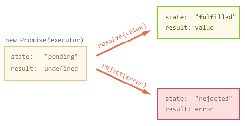

Game dev. Promises. Callbacks
- state — initially “pending”, then changes to either “fulfilled” or “rejected”,
- result — an arbitrary value of your choosing, initially undefined.
- resolve(value) — to indicate that the job finished successfully:
-
sets state to "fulfilled",
-
sets result to value.
- reject(error) — to indicate that an error occurred:
-
sets state to "rejected",
-
sets result to error.

Consumers: “then” and “catch”
What You Should Know About Web Dev Salaries
Front-End Dev Salary (Net) in Different Countries
Predictions for JS Salaries in the Future